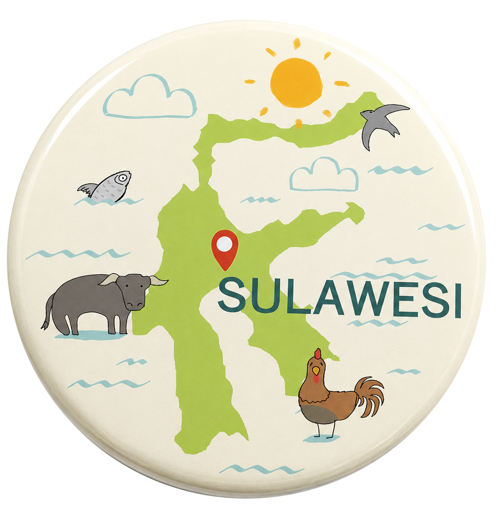

アジア太平洋戦争において、日本軍は3年半にわたってインドネシアの島々を占領しました。その間に、インドネシアとオランダ系の女性たち、植民地などから連れてこられた多くの女性たちが性奴隷としてすさまじい性暴力被害にあいました。
インドネシアの被害女性たちも被害を証言し、民間による聞き取り調査や資料の発掘によって実態が明らかにされてきました。しかし、いまだに国家による真相究明やサバイバー支援は実施されず、生活支援などの取り組みも行われないまま、サバイバーは高齢となり、病気やトラウマに苦しんでいます。
2019年に私たちは日本軍「慰安婦」全国行動のメンバーでスラウェシ島を訪ね、6名のサバイバーの方々から体験を聞き、交流をしました。
その後、2021年4月からは、コロナ禍で生活に困っているサバイバーに安心を届けたいという思いで、緊急支援プロジェクトを開始し、現在まで支援と交流を継続しています。
一人でも多くの人に知ってほしい、一緒に語り継ぎ、一緒に考えてほしいという思いをそれぞれのアイテムに込めました。
Items